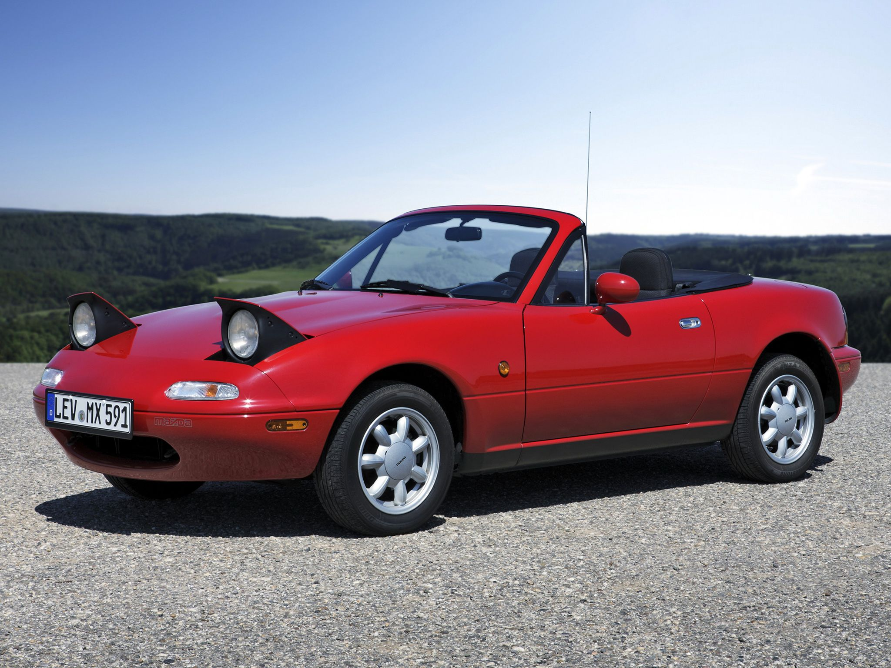

Mazda MX-5 (Miata)
A Mazda MX-5, másik nevén "Miata", melynek első generációja 1989-ben jelent meg, nem a legférfiasabb autók közé tartozik, ez közismert róla. Nincs nagy jelenléte az utakon, alacsony a magassága, kevés a súlya és nem is túl nagy, főleg, ha a mai trendi SUV vásárlási mániát nézzük. Olyan a mai autós ökoszisztémában, mint egy Yorkshire terrier nagytestű kutyák között.
És pont ez az ami ellenállhatatlanná teszi. Az alakja. A mérete. A súlyelosztása. Ez egy kicsi, játékos, hátsókerék meghajtású roadster, olyan vezetési élménnyel, amiről ódákat zengenek mindenhol. Ha szeretjük a kocsikat, akkor az MX-5 olyan hangon, olyan nyelven szól hozzánk, amire egész egszerűen válaszolnunk kell. És ha válaszoltál, akkor már nehéz elkerülni a hosszú beszélgetést vele.
Persze az MX-5 nem arra való, hogy elmenj vele a boltba bevásárolni, vagy hogy versenyezz vele. Nem, ez a kocsi egy hobbiautó, egy kellemes társ, fajtájának lassan utolsó képviselője egy olyan korból, ami lassan, de biztosan elmúlik, mert a mai ember már nem vesz ilyen kocsit valamiért, ez jól látszik a nem túl rózsás eladási adatokon. És ha valami nem fogy, azt miért is gyártsák a jövőben?
Szerencsére az autózás iránti szeretetük miatt a Mazda (talán utoljára) még kiadott egy generációt az MX-5-ből. Az új sem rossz, sőt, de a régi modellekről sem szabad megfeledkezni... egész jó áron vehetjük meg őket, feltéve, ha találunk olyat, amit a tulajdonosa megvigyázott. És ennél a kocsinál minden egyes forint megtérül a garantált mosolygással, amit az autó vezetése kivált a sofőrből. Persze, jó, ha a vásárlás előtt tisztázzuk: a jövőben is komolyan igényli majd a törődést a kocsi ez biztos.
Erre vigyázni kell, mint a szemed fényére, sokan télen nem is használják, ugyanis jó Mazda szokáshoz híven rendkívül könnyen tud rozsdásodni. De ha van valami, ami megérdemli, hogy törődjenek vele, akkor az a Mazda MX-5.
